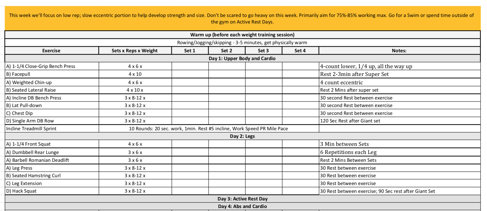

Fitto
Timeline: 1 week
Tools: Sketch
Role: Product Design and Research
Team: Passion Project
Tags: Mobile, Research, User Interviews, Competitive Analysis, UI Design
Introduction
Fitto is a mobile app that helps trainers coach athletes at various levels using custom training programs and schedules. This app idea came to life when a close friend of mine who is a personal trainer found he had a lot of repetition in his workflow where he would create a schedule in a spreadsheet, send it to his clients, update the workout and schedule calls to check in and repeat. Fitto is aimed to provide an end to end experience for trainers and athletes to communicate, track progress and follow structured training plans..
Problem
It is typically much more effective and easier to train your clients in person, however, sometimes clients want to work out on their own for convenience but it can be difficult to communicate back and forth about form, technique and feedback. The problem this case study focuses on is reducing the friction of communication back and forth between trainers and clients when clients train alone.
Target Audience
This app is designed for personal trainers who have clients that can’t always train in person but still want to communicate back and forth easily.
User Interviews
I interviewed 3 different personal trainers to ask about what their process looked like for setting up workout plans, how they communicate with their clients and what pain points they had. Here is the summary of my findings.
Trainer 1
- starts off by observing client at gym and look at what kind of workout would work best for their habits and usually goes through exercises for each program
- if needs to train not in person, will provide video links of the exercise and write tips in the comments column
- uses Google sheets, clients usually comment all over the place on the spreadsheet when they do the exercise (i.e. comment if they struggled, it’s too easy, etc)
- one painpoint is that it is hard to remember to check his client’s workout plans to see if they have any comments or issues but he wants to be notified about injury, boredom, burn out, etc
Trainer 2
- uses Google spreadsheets to write workout plans for clients
- pre-set reps and sets, only lets client work out alone if they have previously done the exercise
- sometimes client has issue with exercise (i.e. experiencing pain), and will report back in person next time
Trainer 3
- uses Google sheets on phone or sometimes prints out sheets
- some clients meet in person only, some prefer to do on their own
- clients that work out on their own, he gives them spreadsheets with video links since they may have not done the exercise before
- clients never click the videos and just end up swapping out the exercise for one they know, then in person he will go over the exercise
- clients use the commenting sections on the spread sheets, but usually communicate over chat
- one painpoint is that sometimes it’s hard to keep organized and he loses track of things or can’t remember things pertaining to a specific client
Current Solution
Main Problem

Client commenting on random columns
Competitive Analysis
After doing research, I found 4 main categories of fitness apps:
- Diet trackers (i.e. myFitnessPal)
- Step by step workout apps (i.e. Seven, Nike Training App, etc)
- Personal Coaching (i.e. FitSW, Trainerize, PEAR personal coach, etc)
- Classes (i.e. MindBody)
1. FitSW
FitSW tracks client progress with graphs but also has a chat feature that lets clients and trainers communicate back and forth. However, in this example of their chat feature, it doesn’t link the client to the meal plan so they have to navigate back and forth to reply and view. There is also no commenting within the training program which would be helpful to discuss problems with sets or exercises.
2. Trainerize
Trainerize has a lot of features to help trainers better track their clients like a summary, graphs of activity, workout plans, and a calendar of events and tasks. The calendar aspect seems useful to help keep track of workout plans and syncs with trainers. However, this lacks more granular progress charts of clients for trainers to track sentiment, weights, etc.
Solution
After research, I found that most training apps allowed you to create programs, manage your clients and had built in chat features. However, I didn’t find any solutions that specifically helped clients and trainers track issues with exercises or form when clients were training alone. Since fitness apps are very complex and have a lot of features, this case study focuses on creating a design that simplifies communicating back and forth on a granular level about challenging exercises and confusion about form within their context. This solves the painpoints of the trainers I interviewed who have clients that struggle with pain, form and technique when they’re not there in person.
My solution will integrate commenting and photo uploading directly in the workout plan for both trainers and clients and trainers will receive a notification when this happens so they can respond back to their clients right away if they’re in the middle of training.
Flow
Wireframes
Lots of Iteration
Final Mocks
Notifications from Clients

Trainer gets notification that client has uploaded a photo in one of the workouts, by tapping the notification, the trainer can view it directly and reply back if his/her client needs feedback immediately. This solves the painpoint mentionned by Trainer 1 in the user interviews where it is difficult to keep track of when your clients comment about the workout program.
Centralized Updates
Trainers also have a notifications tab where they can keep track of training session reminders and client photo uploads/comments in a centralized location. The unread notifications stay highlighted so trainers can be organized about which concerns have already been addressed.
Tapping into the notification brings trainers directly to the comments/photos (like the push notifications).
Per Client Updates
If trainers miss updates from a client or want to see an overview, they can navigate through their clients and get a timeline summary of their workouts each day. They can tap into each summary and they’ll be taken to the workout plan and day. When they navigate to the day, They can see an overview off the day and there will be icons for which exercises have comments/photos.
Managing Clients Made Easier - Client Overview and Calendars
Trainers can see overviews of their clients to make managing much easier. When conducting user interviews, one trainer said sometimes it is difficult to keep organized and remember information about each client so I designed an “Client Overview” where trainers can see booked appointments, the current day their client is working on and progress charts.
I went with the left after asking the trainers and 2 preferred the left option since it saved space when navigating through the other tabs and they said they didn’t need to see the next training session the whole time.
Trainers can view all the workout plans for their clients and see all the charts in the client profile easily. They can also customize the profile by “favouriting” the charts they want to be pinned on the profile since clients all have different goals.
Next to their notifications tab, trainers can also view their calendar for upcoming training sessions they have.
Other apps I researched had calendars too but didn’t have the ability to easily navigate to client profiles or a button to call which after interviewing trainers seemed useful in case they were running late and needed to call their clients quickly.
Overall Flow
What I Learned
This case study was completed over 1 week and was completed to learn more about the research phase of the design process. In this project, I focused on interviewing users and trying to identify problems they had. I researched solutions currently on the market and took a look at what they offered. I took both kinds of researched and started brainstorming solutions to these problems. I had a lot of fun working on this and learned a lot about how to ask non-biased questions when conducting user interviews which helped me uncover problems.
Check out my Other Projects